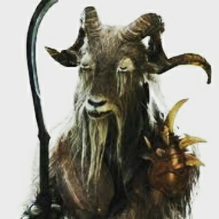
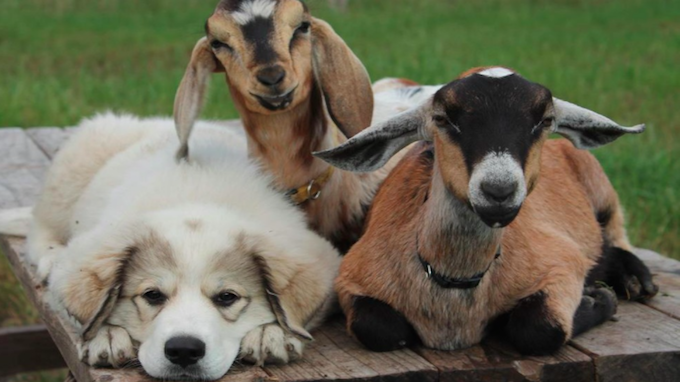
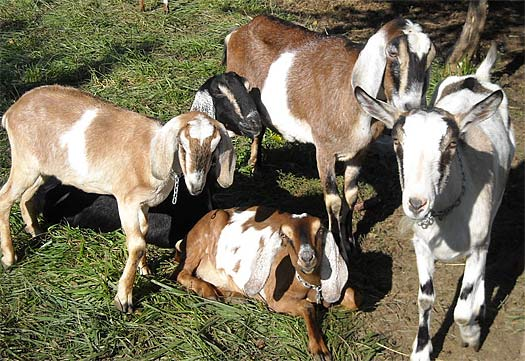
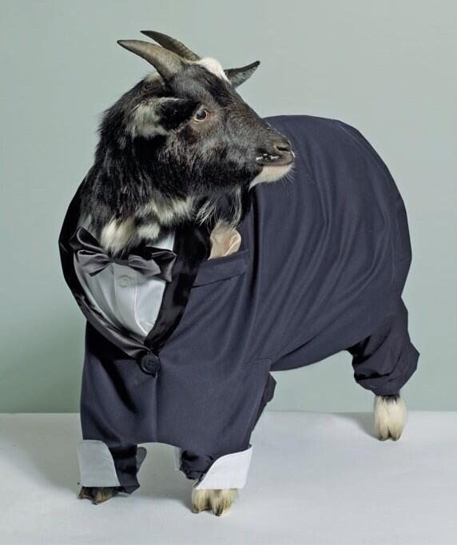
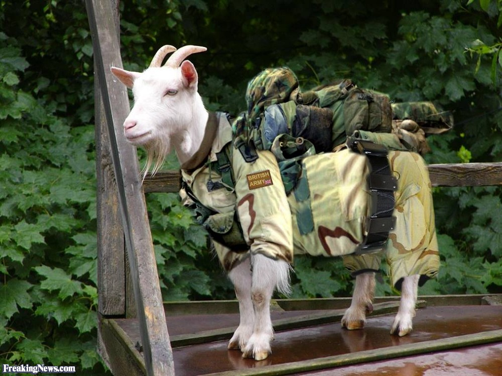
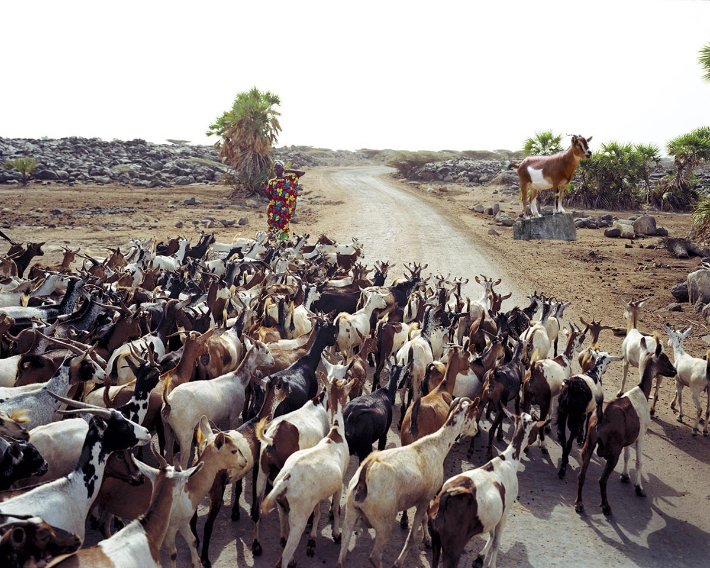

Meet Negan. Negan is kind of a dick and CANNOT work with any other goats. What he lacks in manners, he more than makes up in productivity.

Yes, Courage is a dog but Eustice and Murial love him like their own. Courage does a surprisingly good job of eating grass. He may not be quite as voracious as Murial or Eustice but he grazes with the best of them.

Glen leads this particular tribe which includes Maggie, Carol, Rick, and Carl, or as we call him "CAARRRRRRLLL".

As you can see in this picture, Janet is all business. She does not mess around and she leads one of our most efficient tribes.

This is Sarge. He is truly remarkable. I have never before witnessed a goat garner so much loyalty and respect from a tribe. He really seems to foster a sense of belonging amongst the tribe.

Oprah is by far the most charismatic and lovable goats I have ever encountered. It didn't take long for us to realize that their wasn't a tribe big enough for her personality. We arranged our 1,000 strong tribe just for Oprah. She makes short work of our biggest most ambitious jobs.